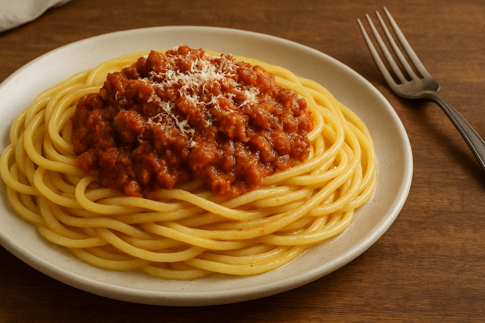

Klassisk Spaghetti Bolognese

Her er en varm og hjertelig opskrift på klassisk spaghetti bolognese.
Denne ret er perfekt til hyggelige aftener, hvor du vil forkæle dig selv (og måske et par venner) med en fyldig kødsovs og al dente pasta.
Masser af smag og en god base af grøntsager og krydderier sikrer, at saucen bliver rig og velsmagende.
Husk at give saucen tid til at simre – det udvikler dybde i smagen!
Ingredienser (4 personer)
- 400 g hakket oksekød (gerne 5-7% fedt)
- 1 løg, finthakket
- 2 fed hvidløg, finthakkede
- 2 gulerødder, skrællede og ternede
- 2 stængler bladselleri, finthakkede
- 2 spsk olivenolie
- 150 ml rødvin (valgfrit, men anbefales)
- 400 g hakkede tomater (1 dåse)
- 2 spsk tomatpure
- 200 ml oksebouillon (eller vand + bouillonterning)
- 1 tsk tørret oregano
- 1 tsk tørret basilikum
- 1 laurbærblad
- Salt og friskkværnet peber
- Spaghetti til 4 personer (ca. 400 g)
- Friskrevet parmesan til servering (valgfrit)
Fremgangsmåde
- Varm olivenolien op i en stor gryde ved middel varme. Tilsæt finthakket løg, hvidløg, gulerødder og bladselleri, og sautér i ca. 5–6 minutter, indtil grøntsagerne er bløde og let gyldne.
- Skub grøntsagerne til side i gryden, hæld hakket oksekød i midten, og brun det godt af, så kødet mister sin rå farve og begynder at få lidt stegeskorpe. Bryd eventuelt kødet op med en træske, mens det steger.
- Når kødet er jævnt brunet, rør det sammen med grøntsagerne. Tilsæt tomatpure, og steg i 1 minut mere for at “afrunde” tomatsmagen.
- Hæld rødvinen i, hvis du bruger det, og lad det koge ind i ca. 2–3 minutter, indtil det meste alkohol er fordampet. Skru ned for varmen, og tilsæt de hakkede tomater, oksebouillon, oregano, basilikum og laurbærblad. Rør godt rundt.
- Lad saucen simre ved lav varme, tildækket, i mindst 30 minutter (gerne 45–60 minutter), så smagene udvikler sig. Rør jævnligt, og tilsæt lidt ekstra bouillon eller vand, hvis saucen bliver for tyk.
- 30 minutter før servering: Kog spaghetti i en stor gryde med rigeligt letsaltet vand efter pakkens anvisning, indtil den er “al dente.” Hæld pastaen fra, men gem ca. ½ dl af kogevandet.
- Smag bolognesesaucen til med salt og peber. Fjern laurbærbladet. Hvis saucen virker for tør, kan du røre lidt af det gemte pastavand i, så konsistensen bliver mere sammenhængende.
- Anret pasta på varme tallerkener, top med en god portion bolognese og drys evt. friskrevet parmesan over. Server straks sammen med et stykke brød eller en grøn salat efter ønske.